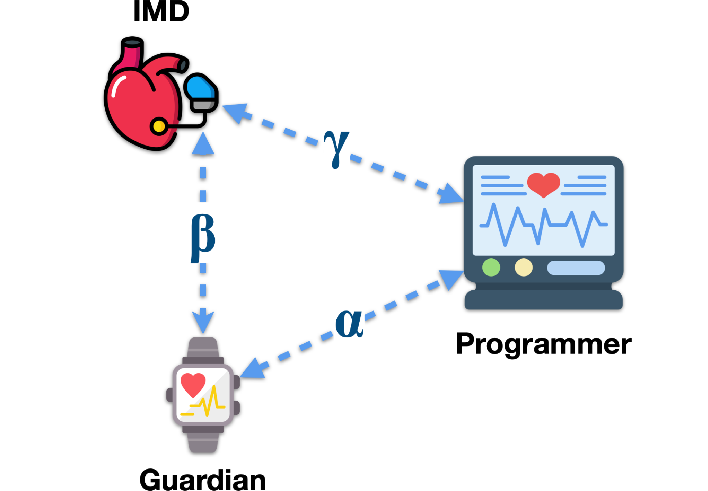
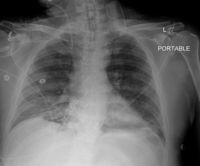

Christian Coduri
Cybersecurity Researcher and PhD student at Politecnico di Torino
Research interests: AI Security · Privacy-preserving ML · Medical Data Security
Cybersecurity Researcher and PhD student at Politecnico di Torino
Research interests: AI Security · Privacy-preserving ML · Medical Data Security
[Full list of publications here]
Christian Coduri, Alessio Sacco, Guido Marchetto, Riccardo Sisto
PerCom, 2026
Formal analysis of IMDGuard reveals authentication weaknesses and proposes mitigations to secure IMD communications.
IMDGuard is a proxy-based authentication protocol designed to secure communications between an Implantable Medical Device (IMD), a technology increasingly used in cardiac care, and its associated Programmer device through a wearable third-party mediator known as the Guardian. In this paper, we formally analyze the security of IMDGuard using the ProVerif verification tool and demonstrate that the protocol is vulnerable to multiple attacks. Our analysis confirms a known susceptibility to denial-of-service attacks and reveals a previously unreported flaw in the authentication mechanism between the Guardian and the Programmer. This vulnerability allows an adversary to impersonate the IMD, inject falsified telemetry data, and issue deceptive responses to legitimate Programmer commands, posing a serious risk to patient safety by potentially leading clinicians to make medical decisions based on compromised information. To mitigate this threat, we propose a remediation mechanism that enforces the mutual authentication process, thereby enhancing protocol resilience against impersonation attacks. The proposed improvements restore the intended security guarantees of IMDGuard, ensuring safer and more reliable communication in cardiac care applications.

Additional information: This work was also presented in a talk at milan0day 2026.
Christian Coduri, Stelvio Cimato
COMPSAC, 2025
A secure method for sharing and storing diagnostic exam results in DICOM format, utilizing steganography and visual cryptography to protect both metadata and pixel data.
In the domain of medical data security, the confidentiality and integrity of diagnostic exam results is crucial. However, the use of DICOM files, the standard format for storing and sharing medical images like X-rays and MRIs, can pose security risks because they are not subject to encryption requirements. As a result, these files rely heavily on the security measures implemented within the healthcare institution's networks and databases, which are often inadequate in preventing unauthorized access, data tampering, or malicious injections. The goal of this paper is to propose a secure method for sharing and storing diagnostic exam results, ensuring the confidentiality of the information while safeguarding patient privacy. The proposed solution operates directly on DICOM files, utilizing steganography and visual secret sharing to protect and maintain the security of both metadata and pixel data.

Additional information: This work was derived from my Bachelor's thesis.
Top 100 Italian cryptography theses (2017-2024) Thesis (ITA) Recording (ITA)
A talk on how formal verification (using ProVerif) can uncover subtle authentication flaws in implantable medical device protocols.
Implantable medical devices such as pacemakers are wireless, networked computers embedded in the human body. Like any connected system, they rely on authentication and access control protocols to determine who can communicate with them and under what conditions. This talk begins with an overview of the main security architectures proposed in the medical device literature, including proximity-based schemes, biometric authentication, proxy-based guardians, and hybrid designs. We examine how they work, their security guarantees, and the assumptions on which they depend. From there, we shift to a security engineer's perspective. What happens when we stop trusting the design and formally verify it? Using ProVerif, we demonstrate how security protocols can be modeled, how adversarial capabilities are defined, and how formal verification tools can uncover attack paths beyond human intuition. Finally, we present the formal analysis of a widely known implantable device protocol. Our verification reveals a subtle authentication flaw that enables session key forgery and device impersonation without breaking any cryptographic primitive. The math holds. The logic doesn't.